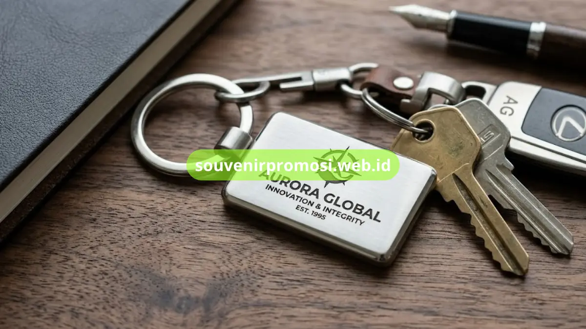

Souvenir promosi gantungan kunci adalah merchandise cetak logo berbentuk gantungan kunci yang dipakai perusahaan untuk memperkuat brand awareness, dicetak dalam berbagai bahan seperti akrilik, kulit, logam, dan karet dengan harga terjangkau per unit.
Gantungan kunci menjadi salah satu item merchandise paling banyak dipesan karena fungsinya yang dipakai setiap hari oleh penerima, sehingga logo perusahaan terus terlihat berulang kali. Berikut sembilan ide souvenir promosi gantungan kunci yang bisa dipilih sesuai kebutuhan branding dan anggaran perusahaan Anda.
Poin Penting
- Gantungan kunci akrilik custom paling populer karena cetak logo full color dan harga terjangkau untuk pemesanan massal.
- Gantungan kunci kulit memberi kesan premium, cocok untuk klien korporat dan hadiah eksekutif.
- Gantungan kunci logam ukir memberi daya tahan tinggi dan tampilan mewah untuk merchandise jangka panjang.
- Souvenir Promosi menyediakan layanan cetak logo custom dengan minimum order fleksibel dan proses produksi cepat.
- Semua desain dapat dikonsultasikan langsung melalui katalog online di souvenirpromosi.web.id.
Daftar Isi
- 1. Gantungan Kunci Akrilik Custom Logo
- 2. Gantungan Kunci Kulit Sintetis Embose Logo
- 3. Gantungan Kunci Logam Ukir Laser
- 4. Gantungan Kunci Karet PVC 3D Timbul
- 5. Gantungan Kunci Kayu Ukir Custom
- 6. Gantungan Kunci Multifungsi Bottle Opener
- 7. Gantungan Kunci Rubber Doming Resin
- 8. Gantungan Kunci LED dengan Logo Custom
- 9. Gantungan Kunci Set Paket Korporat
- FAQ
1. Gantungan Kunci Akrilik Custom Logo
Gantungan kunci akrilik custom logo menjadi pilihan favorit karena mendukung cetak full color dengan detail tajam dan harga produksi yang efisien untuk jumlah besar. Bahan akrilik ringan, transparan atau warna solid, dan mudah dibentuk sesuai siluet logo perusahaan.
Jenis ini cocok untuk kampanye peluncuran produk, seminar, atau merchandise pameran karena tampilannya modern dan bisa dicetak dua sisi. Souvenir Promosi menyediakan pilihan ketebalan akrilik 3mm hingga 5mm sesuai kebutuhan daya tahan.
2. Gantungan Kunci Kulit Sintetis Embose Logo
Untuk kesan lebih elegan dan profesional, gantungan kunci kulit sintetis dengan teknik embose atau debose logo memberikan tampilan timbul yang mewah tanpa warna mencolok. Item ini banyak dipilih untuk suvenir tamu VIP, hadiah klien, atau merchandise hotel dan perbankan.
Kulit sintetis lebih tahan lama dibanding kulit asli untuk penggunaan promosi massal, sekaligus lebih ramah anggaran namun tetap terlihat berkelas saat dipegang penerima.

3. Gantungan Kunci Logam Ukir Laser
Gantungan kunci logam dengan teknik ukir laser cocok untuk perusahaan yang ingin memberi kesan awet dan bernilai tinggi. Bahan logam seperti kuningan atau stainless memberikan bobot dan kilau yang membuat merchandise terasa premium.
Souvenir jenis ini sering dipilih untuk hadiah ulang tahun perusahaan, penghargaan karyawan, atau merchandise korporat kelas atas yang ingin bertahan bertahun-tahun.
4. Gantungan Kunci Karet PVC 3D Timbul
Gantungan kunci karet PVC dengan desain 3D timbul memberikan efek visual logo yang lebih hidup dan mudah dikenali dari jarak dekat maupun jauh. Bahan karet lentur, tahan air, dan warna tidak mudah pudar meski sering terpapar cuaca.
Item ini populer untuk merchandise komunitas, sponsor acara olahraga, atau souvenir event outdoor karena daya tahannya terhadap penggunaan aktif sehari-hari.
5. Gantungan Kunci Kayu Ukir Custom
Bagi perusahaan yang mengusung nilai ramah lingkungan, gantungan kunci kayu ukir custom logo menjadi pilihan tepat. Bahan kayu memberi kesan natural, hangat, dan berbeda dari merchandise plastik pada umumnya.
Souvenir jenis ini cocok untuk brand dengan identitas eco-friendly, resort, kafe, atau perusahaan yang ingin merchandise dengan nilai estetika tinggi.
6. Gantungan Kunci Multifungsi dengan Bottle Opener
Gantungan kunci yang dilengkapi fungsi tambahan seperti pembuka botol memberikan nilai guna lebih tinggi bagi penerima, sehingga peluang item ini terus dipakai jauh lebih besar dibanding gantungan kunci polos.
Desain multifungsi ini sering dipesan untuk merchandise komunitas, acara gathering, atau souvenir yang ditujukan untuk kalangan muda dan pekerja lapangan.
7. Gantungan Kunci Rubber Doming Resin
Teknik doming resin pada gantungan kunci karet memberikan efek permukaan mengkilap dan tekstur timbul yang membuat logo terlihat lebih tajam serta tahan gores. Hasil akhirnya menyerupai emblem premium meski harga produksinya tetap terjangkau.
Pilihan ini ideal untuk perusahaan yang ingin merchandise terlihat mewah namun tetap efisien dari sisi anggaran produksi massal.
8. Gantungan Kunci LED dengan Logo Custom
Untuk kesan lebih inovatif, gantungan kunci dengan fitur lampu LED menampilkan logo yang menyala saat ditekan. Item ini memberi kesan modern dan fungsional sebagai alat penerangan darurat, sekaligus menjadi daya tarik unik dibanding merchandise konvensional.
Souvenir jenis ini cocok untuk brand teknologi, startup, atau kampanye produk yang ingin tampil beda dan diingat lebih lama oleh penerima.
9. Gantungan Kunci Set Paket Korporat
Paket gantungan kunci yang dikombinasikan dengan aksesori lain seperti lanyard atau kartu nama dalam satu set kemasan menjadi pilihan untuk kebutuhan merchandise formal, seperti goodie bag seminar atau paket welcome kit karyawan baru.
Souvenir Promosi dapat menyusun paket custom sesuai kebutuhan acara, lengkap dengan kemasan branding perusahaan Anda.
Memilih souvenir promosi gantungan kunci yang tepat bergantung pada tujuan branding, anggaran, dan kesan yang ingin dibangun perusahaan Anda, mulai dari akrilik yang ekonomis hingga logam ukir yang premium. Setiap bahan memiliki keunggulan tersendiri dalam memperkuat identitas visual brand pada penggunaan sehari-hari penerima.
Untuk memastikan hasil cetak logo tajam, bahan berkualitas, dan proses produksi tepat waktu, Souvenir Promosi siap membantu mewujudkan merchandise gantungan kunci sesuai kebutuhan perusahaan Anda. Cek katalog lengkap dan konsultasikan desain custom Anda sekarang melalui souvenirpromosi.web.id, atau hubungi tim kami langsung untuk mendapatkan penawaran harga terbaik sesuai jumlah pesanan.